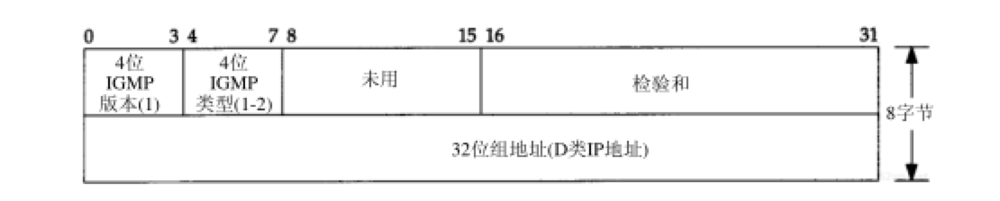
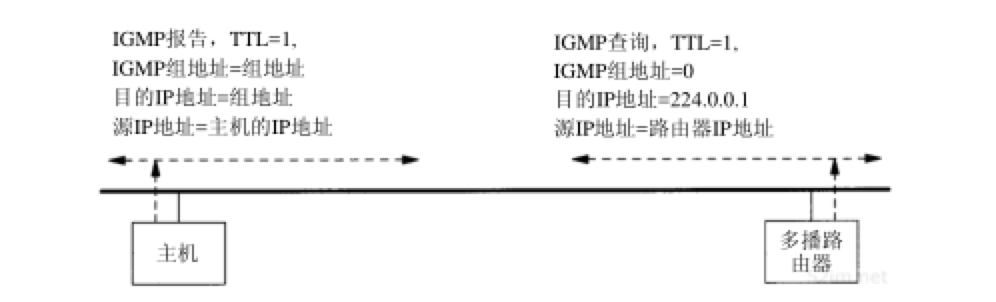
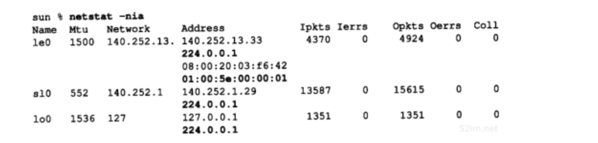
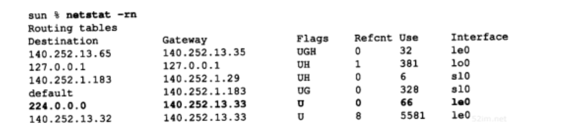
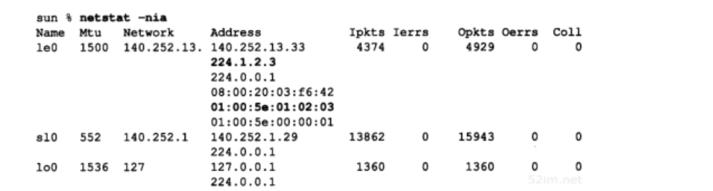
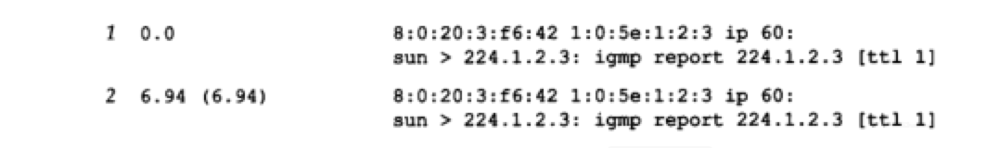
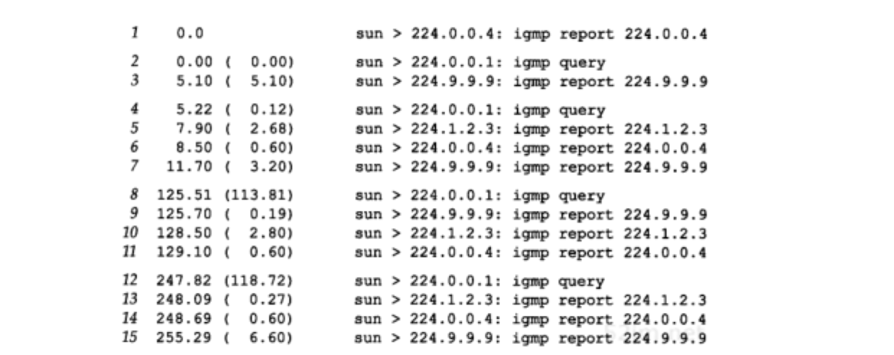

IGMP：Internet组管理协议
上一章概述了IP多播给出，并介绍了D类IP地址到以太网地址的映射方式。也简要说明了在单个物理网络中的多播过程，但当涉及多个网络并且多播数据必须通过路由器转发时，情况会复杂得多。本章将介绍用于支持主机和路由器进行多播的Internet组管理协议(IGMP)。它让一个物理网络上的所有系统知道主机当前所在的多播组。多播路由器需要这些信息以便知道多播数据报应该向哪些接口转发。IGMP在RFC 1112中定义
正如ICMP一样，IGMP也被当作IP层的一部分。IGMP报文通过IP数据报进行传输。不像已经见到的其他协议，IGMP有固定的报文长度，没有可选数据。图13-1显示了IGMP报文如何封装在IP数据报中：
IGMP报文通过 IP首部中协议字段值为2 来指明
IGMP协议
报文
图13-2显示了长度为8字节的IGMP报文格式：

- 版本：1
- 类型：
- 1：由多播路由器发出的查询报文
- 2：主机发出的报告报文
- 检验和的计算和ICMP协议相同
- 组地址：D类IP地址
- 在查询报文中组地址设置为0
- 在报告报文中组地址为要参加的组地址
协议
加入一个多播组
多播的基础就是一个进程的概念，该进程在一个主机的给定接口上加入了一个多播组。在一个给定接口上的多播组中的成员是动态的：它随时因进程加入和离开多播组而变化
这里所指的进程必须以某种方式在给定的接口上加入某个多播组。进程也能离开先前加入的多播组。这些是一个支持多播主机中任何API所必需的部分。使用限定词 接口 是因为多播组中的成员是与接口相关联的。一个进程可以在多个接口上加入同一多播组
这里暗示一个主机通过组地址和接口来识别一个多播组。主机必须保留一个表，此表中包含所有至少含有一个进程的多播组以及多播组中的进程数量
查询和报告
多播路由器使用IGMP报文来记录与该路由器相连网络中组成员的变化情况。使用规则如下：
- 当第一个进程加入一个组时，主机就发送一个IGMP报告。如果一个主机的多个进程加入同一组，只发送一个IGMP报告。这个报告被发送到进程加入组所在的同一接口上
- 进程离开一个组时，主机不发送IGMP报告，即便是组中的最后一个进程离开。主机知道在确定的组中已不再有组成员后，在随后收到的IGMP查询中就不再发送报告报文
- 多播路由器定时发送IGMP查询来了解是否还有任何主机包含有属于多播组的进程。多播路由器必须向每个接口发送一个IGMP查询。因为路由器希望主机对它加入的每个多播组均发回一个报告，因此IGMP查询报文中的组地址被设置为0
- 主机通过发送IGMP报告来响应一个IGMP查询，对每个至少还包含一个进程的组均要发回IGMP报告
使用这些查询和报告报文，多播路由器对每个接口保持一个表，表中记录接口上至少还包含一个主机的多播组。当路由器收到要转发的多播数据报时，它只将该数据报转发到（使用相应的多播链路层地址）还拥有属于那个组主机的接口上
图13-3显示了两个IGMP报文，一个是主机发送的报告，另一个是路由器发送的查询。该路由器正在要求那个接口上的每个主机说明它加入的每个多播组：

实现细节
为改善该协议的效率，有许多实现的细节要考虑：
- 当一个主机首次发送IGMP报告（当第一个进程加入一个多播组）时，并不保证该报告被可靠接收。下一个报告将在间隔一段时间后发送。这个时间间隔由主机在0~10秒的范围内随机选择
- 当一个主机收到一个从路由器发出的查询后，并不立即响应，而是经过一定的时间间隔后才发出一些响应。既然参加同一多播组的多个主机均能发送一个报告，可将它们的发送间隔设置为随机时延。在一个物理网络中的所有主机将收到同组其他主机发送的所有报告，因为如图13-3所示的报告中的目的地址是那个组地址。这意味着如果一个主机在等待发送报告的过程中，却收到了发自其他主机的相同报告，则该主机的响应就可以不必发送了。因为多播路由器并不关心有多少主机属于该组，而 只关心该组是否还至少拥有一个主机 ，一个多播路由器甚至不关心哪个主机属于一个多播组
在没有任何多播路由器的单个物理网络中，仅有的IGMP通信量就是在主机加入一个新的多播组时，支持IP多播的主机所发出的报告
TTL字段
在图13-3中，注意到IGMP报告和查询的生存时间(TTL)均设置为1，这涉及到IP首部中的TTL字段。一个初始TTL为0的多播数据报将被限制在同一主机。在默认情况下，待传多播数据报的TTL被设置为1，这将使多播数据报仅局限在同一子网内传送。更大的TTL值能被多播路由器转发
对发往一个多播地址的数据报从不会产生ICMP差错。当TTL值为0时，多播路由器也不产生 ICMP超时差错
在正常情况下，用户进程不关心传出数据报的TTL。然而，一个例外是Traceroute程序，它主要依据设置TTL值来完成
既然多播应用必须能够设置要传送数据报的TTL值，这意味着程序设计接口必须为用户进程提供这种能力
通过增加TTL值的方法，一个应用程序可实现对一个特定服务器的扩展环搜索。第一个多播数据报以TTL等于1发送。如果没有响应，就尝试将TTL设置为2，然后3，等等。在这种方式下，该应用能找到以跳数来度量的最近的服务器
从224.0.0.0到224.0.0.255 的特殊地址空间是打算用于多播范围不超过1跳的应用。不管TTL值是多少，多播路由器均不转发目的地址为这些地址中的任何一个地址的数据报
所有主机组
在上图中可以看到了路由器的IGMP查询被发送到目的IP地址 224.0.0.1 ，该地址被称为所有主机组地址。它涉及在一个物理网络中的所有具备多播能力的主机和路由器。当接口初始化后，所有具备多播能力接口上的主机均自动加入这个多播组。这个组的成员无需发送IGMP报告
实例
多播主机
先使sun主机能够支持多播，并将采用一些多播软件所提供的测试程序来观察具体的过程：
- 采用一个经过修改的netstat命令来报告每个接口上的多播组成员情况。在下面的输出中，用黑体表示有关的多播组：

- 以太网：输出结果中的第2行le0显示了这个接口属于主机组224.0.0.1（ 所有主机 ）
- 以太网的多播硬件地址为： 01:00:5e:00:00:01 ，这和以前介绍的地址映射一致
- 其他两个支持多播的接口，它们也属于所有主机组：
- SLIP接口sl0
- 回送接口lo0
- 以太网：输出结果中的第2行le0显示了这个接口属于主机组224.0.0.1（ 所有主机 ）
- 用于多播的路由表同正常的路由表一样。黑体表项显示了所有传往224.0.0.0的数据报均被送往以太网：

如果将这个路由表与9.2节中sun路由器的路由表作比较，会发现只是多了有关多播的条目
- 现在使用一个测试程序来让我们能在一个接口上加入一个多播组。在以太网接口（140.252.13.33）上加入多播组224.1.2.3。执行netstat程序看到内核已加入这个组，并得到期望的以太网地址。用黑体字来突出显示和前面netstat输出的不同：

在输出中再次显示了其他两个接口：sl0和lo0，目的是为了重申 加入多播组只发生在一个接口上
- 下图显示了tcpdump对进程加入这个多播组的跟踪过程：

- 当主机加入多播组时产生第1行的输出显示。第2行是经过时延后的IGMP报告，介绍过报告重发的时延是10秒内的随机时延
- 在两行中显示硬件地址证实了以太网目的地址就是正确的多播地址。也看到了源IP地址为相应的sun主机地址，而目的IP地址是多播组地址。同时，报告的地址和期望的多播组地址是一致的
- 正像指明的那样，TTL是1。当TTL的值为0或1时，tcpdump在打印时用方括号将它们括起来，这是因为TTL在正常情况下均高于这些值。然而，使用多播期望看到许多TTL为1的IP数据报
在这个输出中暗示了一个多播路由器必须接收在它所有接口上的所有多播数据报。路由器无法确定主机可能加入哪个多播组
多播路由器例子
在sun主机中启动一个多播选路的守护程序。这里感兴趣的并不是多播选路协议，而是要研究所交换的IGMP查询和报告。即使多播选路守护程序只运行在支持多播的主机上，所有的查询和报告都将在那个以太网上进行多播，所以在该以太网中的其他系统中也能观察到它们。
在启动选路守护程序之前，加入另外一个多播组224.9.9.9，图13-5显示了输出的结果：

在这个输出中没有包括以太网地址，因为已经证实了它们是正确的。也删去了TTL等于1的说明，同样因为它们也是期望的那样
- 当选路守护程序启动时，输出第1行。它发出一个已经加入了组224.0.0.4的报告。多播地址224.0.0.4是一个知名的地址，它被当前用于多播选路的距离向量多播选路协议DVMRP所使用
- 在该守护程序启动时，它也发送一个IGMP查询（第2行）。该查询的目的IP地址为224.0.0.1（所有主机组），如图13-3所示
- 第一个报告（第3行）大约在5秒后收到，报告给组224.9.9.9。这是在下一个查询发出之前（第4行）收到的唯一报告
- 当守护程序启动后，两次查询（第2行和第4行）发出的间隔很短，这是因为守护程序要将其多播路由表尽快建立起来
- 第5、6和7行正是期望看到的：sun主机针对它所属的每个组发出一个报告
- 注意： 组224.0.0.4是被报告的，而其他两个组则是明确加入的 ，因为只要选路守护程序还在运行，它始终要属于组224.0.0.4
- 下一个查询位于第8行，大约在前一个查询的2分钟后发出。它再次引发三个我们所期望的报告（第9、10和11行）。这些报告的时间顺序与前面不同，因为接收查询和发送报告的时间是随机的
- 最后的查询在前一个查询的大约2分钟后发出，再次得到了期望的响应